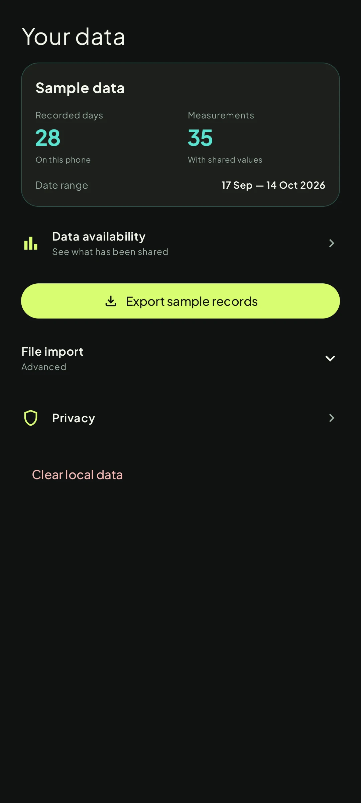

FormaProduct story · 6 min read
Health readings with the context attached.
A native Android health app that brings activity, sleep and personal trends together while making sources, missing data and experimental estimates visible.
Read the case study
Archived native Today screen with clearly marked demo values. This capture predates the later Health-tab and personal-tool cleanup.
View full size ↗01 The problem
How can a daily overview make the meaning of each reading clear?
A watch can collect more measurements than a person can comfortably interpret. A number also changes meaning when it is old, incomplete, imported or estimated. I framed Forma around a daily overview that stays useful without making uncertain data look more reliable than it is.
Designed for Android user reviewing Samsung-shared health records. Understand the reading and its source before comparing it with a personal pattern.
User context Design assumption
Moving between a daily summary, a specific measurement and a watch connection that may have partial permissions.
- The friction
- Missing, older and estimated values can look like equally reliable facts.
- Design implication
- Keep time, source and availability visible, with deeper explanation one step away.
Example situation · illustrative scenario. Imagine opening a health dashboard after a watch sync. One measurement is recent, one was last recorded days ago, and another has not been shared. Similar-looking numbers can hide very different situations.
02 The direction
Treat availability as part of the design
Data quality is part of the experience. Source, measurement time, missing inputs and model coverage change how a reading should be interpreted.
Native artifacts and documented UX audit · sample data in captures
My direction. I focused the daily overview on readable measurements, with a clear route into history, source context and score explanations.
Process and product scope
I organised the experience around five destinations: Today for a daily overview, Sleep for the recorded night, Move for activity and workouts, Trends for comparison, and Health for the measurement library. The native app is the product; the React version in the repository is a design preview.
The data constraints shaped the UX. Samsung Health must share records through Health Connect, permissions can be partial, and not every watch measurement is available. Connection setup therefore needs to explain availability rather than treat an empty reading as a failure or a zero.
The later function audit separated Devices from Your data, moved optional personal tools into settings, removed controls without a working purpose, and put formulas behind expandable details. The archived screens illustrate the native visual direction; the audit and current source establish the later navigation and scope. This is an artifact-based retrospective, without a participant study or clinical validation.
- 5
- main destinations
- 44
- native metric views
- Recorded
- measurement times retained
- Orient
See Today with explicit sample or source context.
- Inspect
Open sleep, movement or a measurement history.
- Understand
Read the contributors behind an experimental score.
- Manage
Use Devices to connect and Your data to inspect coverage or export.
03 Design decisions
Keep the context close to the reading.
Open a decision to see the reasoning and trade-off.
01Distinguish recorded, missing and estimated values
Keep source labels and measurement times attached to readings. Preserve gaps in histories, identify sample data, and distinguish sleeping heart rate from a recorded resting-heart-rate value.
Why this matters. A recent refresh does not mean a sensor reading is recent. People need to understand what a value represents before comparing it with yesterday or using it to interpret their day.
The trade-off. These labels add density. The hierarchy has to keep essential provenance visible while leaving longer explanations available on demand.
02Let a score open into its explanation
Show the score and its contributing values first, then offer the calculation and diagnostics in an expandable sheet. Recovery requires recorded sleep and a usable baseline vital; missing inputs can leave the estimate unavailable.
Why this matters. An unexplained score can look authoritative. Showing its inputs makes the estimate inspectable and lets the interface explain why the same score can accompany different activity records.
The trade-off. Transparency does not validate the model. Sleep, recovery and body-energy estimates remain experimental wellness interpretations, distinct from Samsung proprietary scores and medical assessment.
03Separate connecting a device from managing data
Devices leads with connection state and the next available action. Your data contains coverage, export, optional import and local reset. Targets and personal tools have their own settings paths.
Why this matters. Someone trying to connect a watch should not have to interpret a coverage report or navigate file-management controls before granting access.
The trade-off. Separating the tasks adds destinations. Clear names and back paths matter, particularly when permissions are partial or a watch has not synced.
04 The outcome
A daily overview with a route to the evidence.
I organised the native app around a daily overview, dedicated sleep and movement views, histories and a searchable health library. A score opens into its contributors; device setup and data management have separate destinations. The estimates remain experimental, and Samsung sharing depends on the device and permissions.

More about the experience
- Native interface. The Android app uses native screens and charts; the web version is a design preview.
- Inspectable estimates. Experimental wellness scores retain input and coverage limits.
05 Reflection
Clarity includes knowing what the app cannot tell you.
Separating Devices from Your data made the next action clearer. I would now check whether someone can explain an unavailable or older reading as readily as a complete one, and whether they can find the inputs behind a score.
What I would evaluate next proposed work
- ask people to distinguish sample, shared, direct-watch, older and unavailable readings, then explain what an experimental recovery score does and does not mean.
- Proposed device checks: follow granted, denied and partial-permission journeys on a Samsung phone and watch, including delayed sync, expired direct readings and corrected history.
- connection-task completion, mistaken interpretations of missing data, and success finding a score explanation or exporting records.
Sail your ship. Coordinate the fleet.